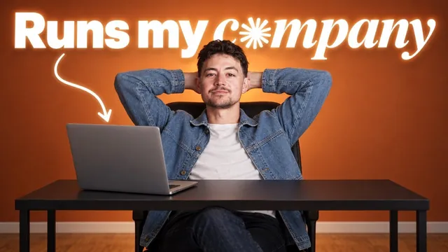

연 매출 100만 달러 회사를 일주일 동안 Claude Code에 맡겨 봤습니다

원본 영상 보기 →
- 내 일은 말보다 화면이 더 정확하게 설명해요
- 자동화의 진짜 시간은 '채점'에 들어가요
- 감독이 필요한 일은 예약하지 않아요
한 줄 요약
Nick은 연 매출 약 100만 달러 규모의 에이전시에 Claude를 붙여 일주일 동안 업무 대부분을 자동화했어요. 화면 캡처로 업무를 기록하고 작업마다 평가(evals)로 점수를 매겨 스킬로 굳힌 뒤, 예약 실행할 것과 사람이 볼 것을 나누는 표준 과정을 단계별로 보여 줘요.
전체 내용 정리
과장 영상이 아니라고 먼저 못 박아요
Nick은 연 매출 약 100만 달러 규모의 자기 사업체에 Claude Code 접근 권한을 주고 "전부 자동화해 달라"고 요청했대요. 결과는 꽤 훌륭했다고 해요. 그런데 바로 선을 그어요. 클릭베이트도 아니고 "내 삶이 전부 자동화돼서 모든 게 환상적"이라고 떠드는 영상도 아니라고요.
Nick은 지난 4년 동안 GPT-3.5 Turbo부터 여러 모델로 같은 시도를 수없이 했고 보통은 꽤 실망스러웠대요. 그런데 이제는 실제로 이런 일을 할 수 있는 지점에 왔다고 봐요. 그래서 이번 영상에서 대부분의 지식 업무를 자동화하는 데 쓸 수 있는 간단하고 표준화된 과정을 알려 주겠다고 해요.
말 대신 화면으로 보여 주고, 나온 목록을 Claude에게 넘겨요
첫 단계는 자기 업무를 분석하는 거예요. 여기에만 일주일 정도 걸렸대요. Nick은 Opus 5.5를 'Max thinking' 모드로 두고 하루 종일 5초마다 작업 화면을 캡처하는 추적 도구를 만들어 달라고 했어요. 1분에 12번꼴이니 스크린샷이 상당히 많죠.
그래서 알아볼 수 있는 최소 크기로 압축하고 지금 무엇을 보고 어떤 작업을 하는지 설명을 붙이게 해야 해요. Nick은 이 데이터를 전부 데이터베이스에 저장했어요. 여기에 더해 하루 동안 Claude가 10~15개 정도 질문을 던지게 설정했대요. "지금 무슨 일 하고 있어?", "왜 이 일을 하고 있죠?", "이 일을 성사시키려면 어떤 시스템이 필요한가요?" 같은 간단한 질문이에요.
이 방식의 핵심은 이거예요. 내가 하는 일을 말로 설명할 수는 있지만, 정작 본인은 의사결정에 필요한 맥락을 다 알지 못하는 경우가 많거든요. 그래서 말보다 직접 보여 주는 게 훨씬 효과적이라고 Nick은 말해요. 이 과정에서 사용 한도를 거의 한 번 꽉 채웠고 플랜도 업그레이드해야 했대요. 추천하는 Max thinking 모드를 쓰려면 아마 여러분도 그래야 할 거라고 해요.
분석이 끝나자 에이전시에서 Nick이 직접 관여하는 결과물과 프로세스의 거대한 목록이 나왔어요. Apify나 LinkedIn Sales Navigator로 잠재 고객 리스트 뽑기, 이메일 정보 보강·검증, 콜드 이메일 문구와 시퀀스 쓰기가 있었어요. 도메인을 사서 예열(warm-up)하고 발송 계정 만들기, 콜드 이메일 답장에 회신하기, 통화 일정 잡기, 새 예약 확인, 발굴 통화와 영업 통화, 제안서 작성도 들어 있었고요.
이 목록을 새 Claude 인스턴스에 넣고 이렇게 말하면 돼요. "안녕, 내가 매일 하는 일들이 여기 있어. 내 목표는 고객 대면 업무가 아닌 일들의 대부분을 자동화하는 거야. 이 각각의 작업에 대해 가능한 한 많이 자동화할 수 있는 시스템을 구축하도록 도와줄래?", "만약 이 내용들에 대해 맥락이 부족하다면, 나에게 물어봐 줘."
그러면 Claude가 질문을 하고, 답은 음성으로 녹음해서 넘기기만 하면 돼요. Nick은 간단한 음성 전사 도구를 쓴대요. 한 시간 정도면 모든 내용을 쏟아 낼 수 있고, 그러면 AI가 자동화에 필요한 맥락을 다 파악하게 되죠.
작업마다 평가를 만들어 8점까지 끌어올려요
다음은 각 작업에 평가(evals)를 만드는 단계예요. 평가는 특정 프롬프트를 받았을 때 AI 모델이 그 작업을 얼마나 잘하는지 반복해서 기록하는 테스트예요. 결과는 평균을 내요. AI 모델은 같은 작업도 어떤 때는 아주 잘하다가 어떤 때는 형편없이 하기 때문이에요.
Nick은 앞서 말한 모든 작업을 10번씩 실행하게 하고 그 10개 결과물을 직접 채점했어요. 10점 만점에 8점 이하면(조금 낮은 정확도로 충분한 경우도 있었지만 대부분은 8점, 80% 정도를 목표로 했대요) Claude에게 이렇게 물었대요. "이봐, 내 목표에 맞춰 점수를 높이려면 시스템을 어떻게 개선해야 할까? 결과물들이 이런 식으로 나오는데, 나는 사실 저런 식으로 나오길 원해." 그렇게 시스템이 나아질 때까지 반복했고 거의 모든 작업을 10점 만점에 7~8점 이상으로 끌어올렸다고 해요.
이게 전체 과정에서 시간이 가장 많이 든 부분이래요. 스크린샷은 뒤에서 지켜보는 수준이라 따로 시간이 안 들었지만, 평가는 "이봐요, 이건 틀렸어요. 이걸 고쳐야 해요"라고 직접 말해 줘야 하는 실제 작업 시간이었거든요. 템플릿이나 자료도 많이 넣어 줘야 했대요. 성과가 좋았던 콜드 이메일 예시, 조건에 맞는 리스트, 품질 좋은 제안서 같은 것들이요. 여기서는 여러분도 발품을 좀 팔아야 한다고 Nick은 말해요.
점수를 넘긴 시스템은 스킬로 굳혀서 팀과 나눠요
일정 점수를 넘긴 시스템은 스킬(skill)로 제도화할 수 있어요. Nick이 이걸 아주 중요하게 보는 이유가 있어요. Claude 팀 플랜 같은 걸 쓰면 조직 안의 다른 사람들, 비기술직 직원과도 스킬을 공유할 수 있거든요. 그 사람들은 Claude Code를 쓸 필요도 없어요. Claude Cowork나 Claude 채팅 같은 더 쉬운 도구로 쓰면 되니까요.
시간을 크게 아끼는 팁도 하나 나와요. 스킬의 아주 작은 부분만 고치고 다시 테스트하는 식으로 하지 말고, 테스트 3~4개를 묶어서 동시에 돌리라는 거예요. 그러면 Claude가 스킬에 적용하는 변경 사항을 병렬로 처리할 수 있어요. Nick은 하나씩 순서대로 했다면 하루가 아니라 일주일은 걸렸을 거라고 해요.
예약할 것과 사람이 볼 것을 나눠요
마지막으로 Nick은 스킬마다 Claude에게 물었대요. "이걸 저 없이 자율적으로 실행되도록 예약하는 게 의미가 있을까?" 예를 들어 매일 아침 모든 고객에게 보내는 초안은 지금 작업 중인 내용과 어제 한 일, 현재 겪고 있는 문제점을 알리는 간단한 글이에요. 이런 건 기본적으로 완전히 자동화할 수 있어요. 보내기 전에 한 번 검토하고 엔터만 누르면 되죠.
반면 결과물을 만들거나 시스템을 구축하는 일, 콜드 이메일 캠페인을 처음부터 끝까지 짜는 일은 최소한 사람의 감독이나 개입이 필요해요. 그래서 자동 예약하지 않고 필요할 때마다 Nick이 직접 실행한대요.
예약할 수 있는 걸 다 예약하고 나면 할 일이 몇 개 안 남아요. Nick은 에이전시를 위해 매일 하는 일이 다섯, 여섯 가지 정도뿐이고 나머지 80~90%는 완전히 자동화돼 있대요.
남은 일은 사람과 이야기하는 것뿐이에요
Nick은 이제 사업에서 자기가 할 일은 회의에 들어가 만들고 싶은 시스템에 대해 이야기하는 것뿐이라고 말해요. 이런 일을 싫어하는 사람도 있겠지만, Nick에게는 이게 가장 큰 가치와 즐거움을 준대요. 사람들과 이야기하며 병목을 찾고 자기 경험과 사례를 바탕으로 해결책을 먼저 제시하는 일이죠. 이 부분도 Claude와 상담할 수는 있지만, 직접 대화해야 실제로 무슨 일이 벌어지는지 보인다고 해요.
소프트웨어 엔지니어링과 쓸데없는 A/B 테스트, 모듈 드래그 앤 드롭을 너무 많이 해 온 사람으로서 지금이 얼마나 해방감을 주는지 말로 다 못 한다고 해요. 인생에서 처음으로 사실상 최대치의 생산성으로 일한다는 느낌이 든대요. 앞으로 얼마나 더 갈 수 있을지는 모르지만 AGI의 시대가 오고 있다는 걸 확실히 느낀다고요.
영상 끝에서 Nick은 이 전체 과정을 안내하는 상세 프롬프트를 설명란 두 번째 링크에서 무료로 복사할 수 있다고 알려 줘요. 이 작업에는 가장 최신 모델을 Max thinking 모드로 쓰라고 강하게 권해요. 상위 단계의 계획 수립이라 그 뒤 모든 하위 단계에 영향을 주기 때문이에요. 사용량을 다 쓰면 세션이 초기화될 때까지 기다렸다가 다시 돌리면 된대요.
핵심 인사이트
- 내 일은 말보다 화면이 더 정확하게 설명해요: 사람은 자기 업무를 설명할 때 의사결정에 쓰는 맥락을 빠뜨리기 쉬워요. 그래서 Nick은 5초 간격 캡처와 중간 질문으로 실제 일하는 모습부터 기록하게 했어요. 말로 설명하는 것보다 직접 보여 주는 게 훨씬 효과적이라는 게 Nick의 판단이에요.
- 자동화의 진짜 시간은 '채점'에 들어가요: 같은 작업을 10번 돌려 점수를 매기고 8점 이하면 고치는 과정이 가장 오래 걸렸대요. AI 모델은 같은 작업도 잘할 때와 형편없을 때가 있어서, 한 번이 아니라 평균으로 봐야 한다는 거죠.
- 감독이 필요한 일은 예약하지 않아요: 고객 업데이트 초안처럼 단순한 건 예약하고 콜드 이메일 캠페인처럼 사람의 감독이나 개입이 필요한 건 필요할 때 직접 돌려요. 예약할 수 있는 건 다 예약해서 Nick은 매일 하는 일을 다섯, 여섯 가지로 줄였어요.
오늘 당장 해볼 것
- 하루 동안 내가 하는 일을 30분 단위로라도 적어 보고, 그 목록을 Claude에 붙여 "고객 대면이 아닌 일을 자동화하고 싶어, 맥락이 부족하면 물어봐 줘"라고 요청해 보세요. Nick처럼 캡처 도구까지 만들지 않아도 질문을 받다 보면 빠뜨린 맥락이 드러나요.
- 자동화 후보 하나를 골라 같은 프롬프트로 10번 돌리고 결과를 10점 만점으로 채점해 보세요. 평균이 8점에 못 미치면 원하는 결과 예시를 붙여 고쳐 달라고 하면 됩니다.
- 이미 만든 자동화나 스킬 목록을 펴 놓고 "검토만 하고 보내도 되는 것"과 "사람이 직접 판단해야 하는 것"으로 나눠 보세요. 앞쪽부터 예약 실행으로 돌려 보면 매일 직접 챙길 일이 얼마나 남는지 보여요.